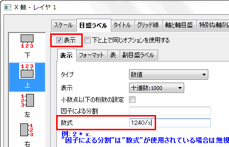
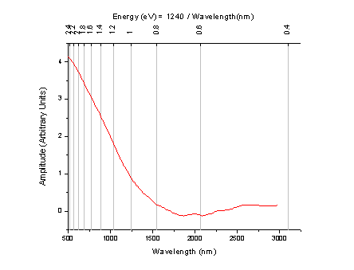
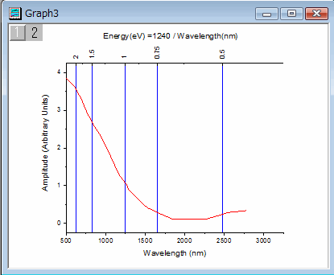
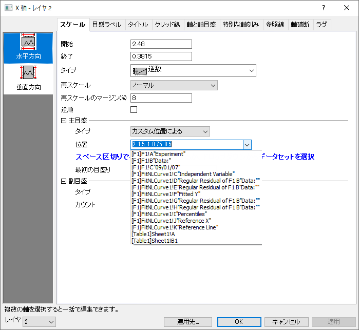

FAQ-112 グラフレイヤに線形ではない2つ目のXまたはY軸を追加するには?
2nd-Nonlinear-Axis
最終更新：2019/01/06
同じレイヤの反対側の軸
一つのレイヤには4本の軸からなっています。上下X軸そして左右Y軸です。下のグラフは1つのレイヤで書かれたグラフで上下X軸が表示されています。下のX軸は、生データにあるようなナノメートル単位の波長です。上X軸はエネルギーを表します。上軸の各目盛ラベルは、式：Energy（ev）= 1240 /Wavelength（nm）で計算されます。

下記が操作方法です。
- 下X軸をダブルクリックして、軸ダイアログボックスを開きます。
- 軸と軸目盛タブを開きます。左側パネルで上を選択します。軸と軸目盛の表示にチェックをつけます。
- 左パネルで上が選択されたまま目盛ラベルタブを開き、表示にチェックをつけます。
- 表示タブの数式の項目に1240/x と入力し、OKボタンをクリックします。
- 目盛ラベルが丸められた値で表示されない場合、軸ダイアログを再度開いて、目盛ラベルタブの表示タブで小数点以下の桁数を設定できます。

Origin 2015より前のバージョンでは、軸ダイアログ内に数式の設定はありませんでした。そのため、以下のようにレイヤ管理ダイアログを使用します。
- メインメニューからグラフ操作：レイヤ管理を選択します。
- 軸タブを開き、上または右のブランチを開いて、軸と目盛ラベルにチェックを付けます。
- 数式ボックスに1240/x を入力します。
- タブ内の下側にある適用ボタンをクリックします。
- OKボタンをクリックして、ダイアログを閉じます。
レイヤ管理ダイアログで設定を変更した場合、、必ず適用ボタンをクリックする必要があります。OKのみをクリックしても何も変化しません。
新規レイヤ
上述のサンプルでは、上Xと下X軸は同じ設定を使用しています。上軸の目盛ラベルのみ数式で計算された値を表示しています。下図のように逆数スケールで目盛を表示したり、上X軸のスケールタイプや目盛位置等を個別に設定したい場合、新しいリンク付きレイヤを作成して上X軸を表示させます。

下記が操作方法です。
- 挿入：新規レイヤ（軸）：上X(Xスケール・寸法リンク)メニューを選択して、上部X軸が表示されたリンク付きの新しいレイヤを追加します。
- グラフ上でダブルクリックして作図の詳細ダイアログを開きます。
- 左パネルでTopX 階層を選択し、軸スケールのリンク対応タブを開きます。
- X 軸のリンクグループのカスタマイズを選択し、以下の数式を入力して上軸の開始と終了の値を計算します。
- X1 =の次に1240/x1を入力します。
- X2 =の次に1240/x2を入力します。
- OKをクリックしてダイアログを閉じます。
- 上X軸をダブルクリックして、軸ダイアログボックスを開きます。
- スケールタブの、タイプを逆数にします。
- グリッド線タブで、主グリッド線の表示にチェックをつけます。
- 目盛ラベルタブでフォーマットタブを開き、回転(度)を90に設定します。
Note: スケール範囲を変更する場合は、下軸をダブルクリックして開く軸ダイアログで、開始と終了の値を変更します。すると、上軸のスケールも更新されます。
データセットから目盛りの場所を指定
前のセクションから続けます。下図のように、主目盛と副目盛の位置を指定した位置に表示できます。

下記が操作方法です。
- 上軸をダブルクリックして、軸ダイアログボックスを開きます。
- スケールタブで、主目盛の項目のタイプをカスタム位置によるに設定します。
- 位置ボックスに直接 2 1.5 1 0.75 0.5 と入力します。あるいは、目盛位置を入力した列をあらかじめ用意し、ドロップダウンから選択します。

クイックヘルプも参照してください：特別な軸刻み
キーワード: リンク, 数式, 関数, 頻度, 波長, エネルギー, 逆数, 非線形, スケール